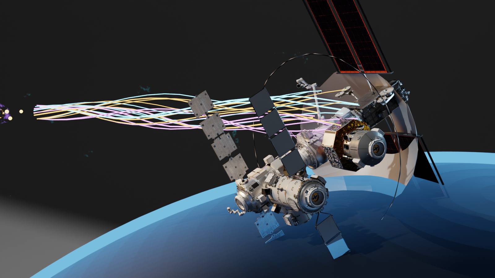
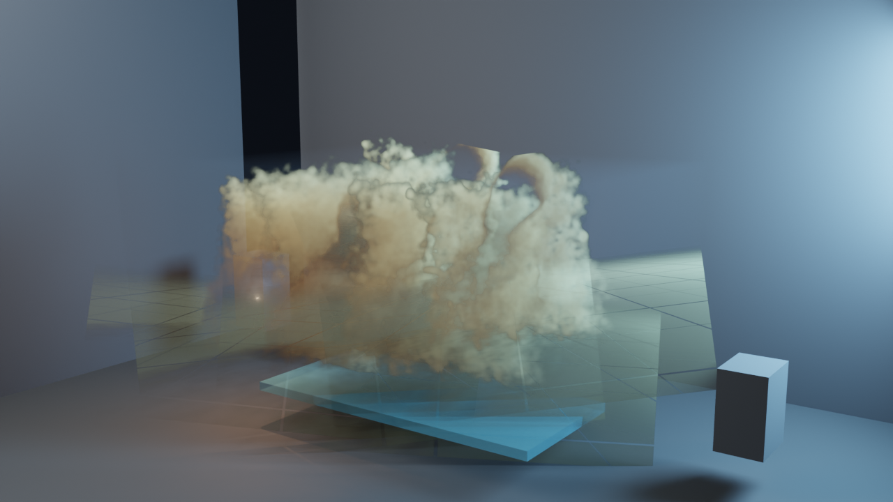
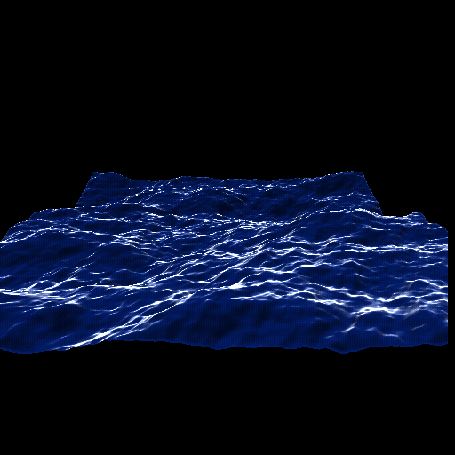
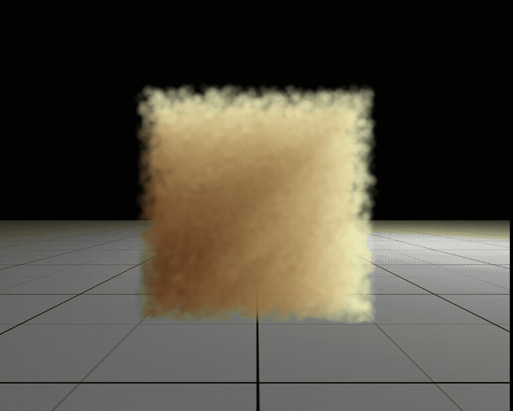
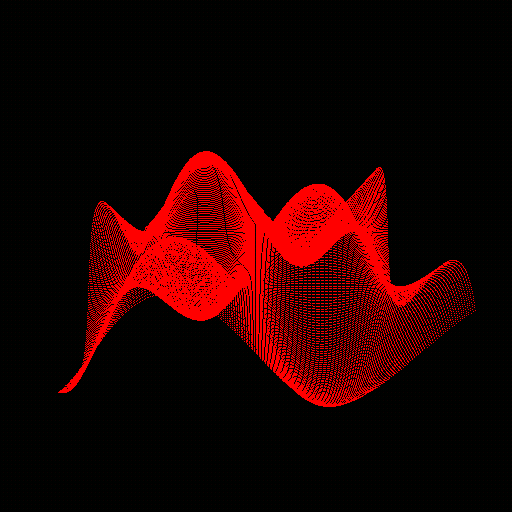
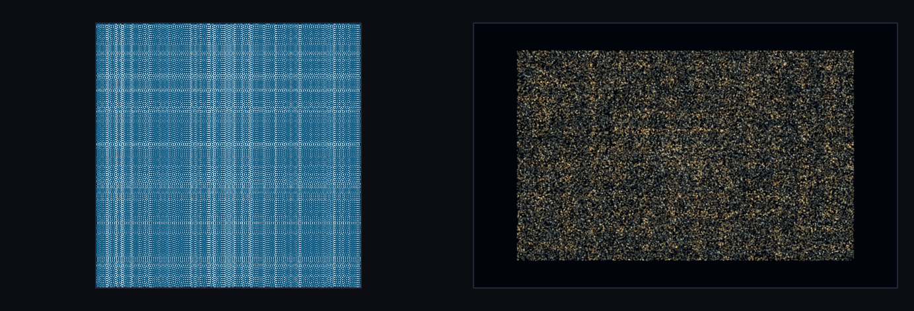
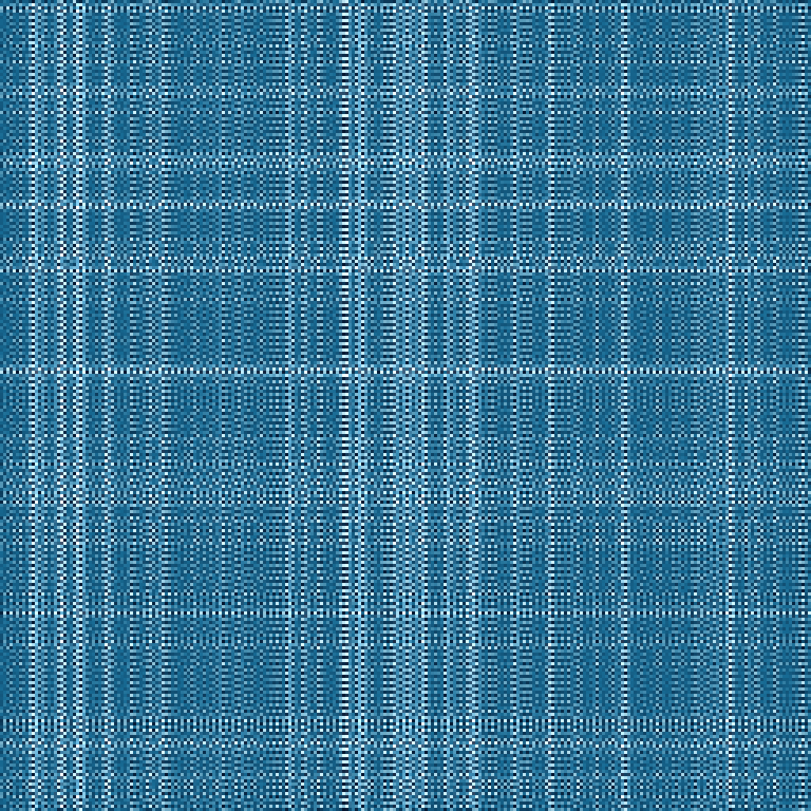
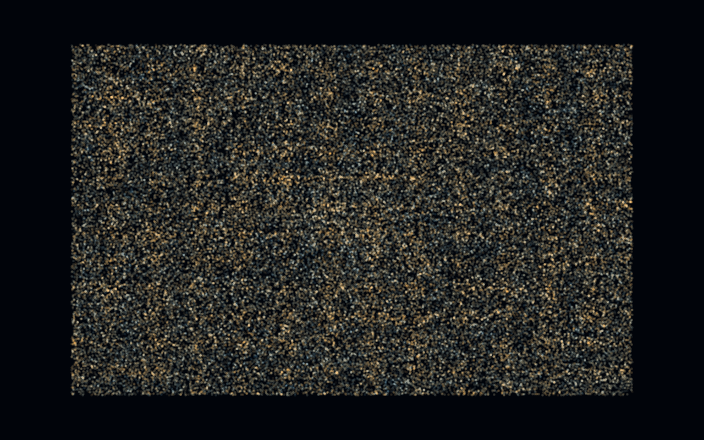

RTX 2070 CUDA Lab
Small visual exports from resurrected NVIDIA CUDA sample demos on the RTX 2070 Windows/WSL render box.
{kind=link}
{kind=link}
Starship texture pass
The ship is deliberately static for keyframe use: the motion comes from CUDA-generated solar-surface frames revealed only through image-generated star-shaped holes in a full black occluder.
The stainless hull wrap and the aperture mask came from generated bitmap assets, then Blender handles the UV wrap, metallic shader response, reflections, and final Cycles/OptiX render.

{kind=link}
Asset shader keyframe
This is the first render from the local NASA/ESO asset library: real downloaded orbital hardware in a Cycles scene, then pushed with custom shader geometry for a plasma-docking corridor and Earth limb glow.
The source assets stay outside git in the local asset cache; the page ships the rendered keyframe and a packed .blend for inspection.
{kind=link}
{kind=link}
Rocket plume bridge
The plume is generated by a CUDA kernel under WSL, exported as flipped image-sequence frames, and rendered in Blender as actual scene cards so the rocket geometry participates in depth and occlusion.
A faster flat composite is still kept as a scratch artifact, but this z-aware render is the page preview and animation/keyframe reference.

{kind=link}
Blender bridge
This is the first CUDA-to-Blender asset pass: the native CUDA smoke demo becomes reusable image-card atmosphere inside a lit Blender scene.
The .blend packs the generated smoke-card textures so it can travel without the local capture folder.

What worked
The WSL CUDA toolchain could build CUDA 11 sample code for the RTX 2070, and the non-windowed QA modes produced valid buffers.
The interactive OpenGL interop demo did not run inside WSLg: `cudaGraphicsGLRegisterBuffer` failed with `cudaErrorOperatingSystem`. The same sample built and passed its reference path natively on Windows.

{kind=link}

{kind=link}

{kind=link}

{kind=link}
{kind=link}

